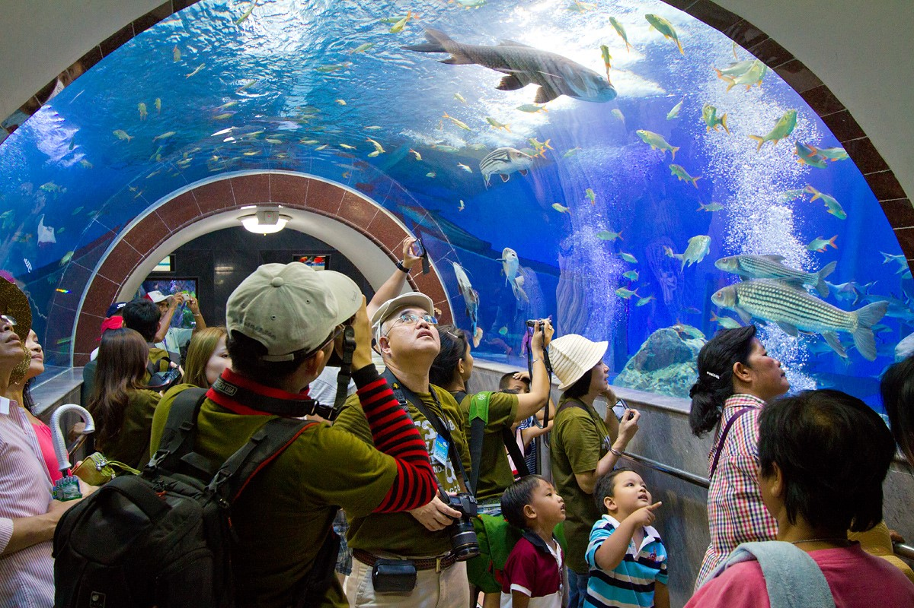

จังหวัดสุพรรณบุรี
คำขวัญประจำจังหวัด
เมืองยุทธหัตถี วรรณคดีขึ้นชื่อ เลื่องลือพระเครื่อง รุ่งเรืองเกษตรกรรม สูงล้ำประวัติศาสตร์ แหล่งปราชญ์ศิลปิน ภาษาถิ่นชวนฟัง
สุพรรณบุรีเป็นเมืองโบราณ พบหลักฐานทางโบราณคดีมีอายุไม่ต่ำกว่า 3,500-3,800 ปี โบราณวัตถุที่ขุดพบมีทั้งยุคหินใหม่ ยุคสำริด ยุคเหล็ก และสืบทอดวัฒนธรรมต่อเนื่องมาตั้งแต่สมัยสุวรรณภูมิ ฟูนัน อมราวดี ทวารวดี และศรีวิชัย สุพรรณบุรีเดิมมีชื่อว่า ทวารวดีศรีสุพรรณภูมิ หรือ พันธุมบุรี ตั้งอยู่บนฝั่งแม่น้ำท่าจีน แถบ บริเวณตำบลรั้วใหญ่ไปจดตำบลพิหารแดง ต่อมาพระเจ้ากาแตได้ย้ายเมืองมาตั้งอยู่ที่ฝั่งขวาของแม่น้ำ แล้วโปรดให้มอญน้อยไปสร้างวัดสนามชัย และบูรณะวัดป่าเลไลยก์ ชักชวนให้ข้าราชการจำนวน 2,000 คนบวช จึงขนานนามเมืองใหม่ว่า สองพันบุรี ครั้งถึงสมัยพระเจ้าอู่ทอง ได้สร้างเมืองมาทางฝั่งใต้หรือทางตะวันตกของแม่น้ำท่าจีน ชื่อเมืองเรียกว่า อู่ทอง จวบจนสมัยขุนหลวงพะงั่ว เมืองนี้จึงเรียกว่าชื่อว่า สุพรรณบุรี นับแต่นั้นมา ในสมัยกรุงศรีอยุธยาเป็นราชธานี เมืองสุพรรณบุรีเป็นเมืองหน้าด่านและเป็นเมืองอู่ข้าวอู่น้ำที่สำคัญ ต้องผ่านศึกสงครามหลายต่อหลายครั้ง สภาพเมืองตลอดจนโบราณสถานถูกทำลายเหลือเพียงซากปรักหักพัง จนกระทั่งถึงสมัยรัตนโกสินทร์ เมืองสุพรรณบุรีได้ฟื้นตัวขึ้นใหม่ และตั้งอยู่บนฝั่งตะวันออกของแม่น้ำท่าจีน (ลำน้ำสุพรรณ) มาจนตราบทุกวันนี้ ความสำคัญของสุพรรณบุรีในด้านประวัติศาสตร์การกอบกู้เอกราชไทยในสมัยกรุงศรีอยุธยา ได้แก่ ชัยชนะแห่งสงครามยุทธหัตถีที่สมเด็จพระนเรศวรมหาราชทรงมีชัยชนะเหนือพระมหาอุปราชา ณ สมรภูมิดอนเจดีย์ เป็นมหาวีรกรรมคชยุทธอันยิ่งใหญ่ที่ได้ถูกจารึกไว้ และมีการจัดงานเพื่อเฉลิมฉลองอย่างยิ่งใหญ่ทุกปี เพื่อเป็นการเทิดพระเกียรติ ในด้านวรรณคดี เป็นเมืองต้นกำเนิดแห่งตำนาน "ขุนช้างขุนแผน" วรรณคดีไทยเรื่องราวและสถานที่ที่ปรากฏตามท้องเรื่องยังคงมีให้เห็นในปัจจุบัน อาทิ บ้านรั้วใหญ่ วัดเขาใหญ่ ท่าสิบเบี้ย ไร่ฝ้าย วัดป่าเลไลยก์ วัดแค อำเภออู่ทอง และอำเภอศรีประจันต์ สุพรรณบุรี ดินแดนแห่งความอุดมสมบูรณ์บนพื้นที่ราบภาคกลางสืบสานความเจริญรุ่งเรืองมาตั้งแต่อดีตเมื่อ พ.ศ. 1420 จากนามเดิมเมืองพันธุมบุรีในยุคทวารวดีตามหลักฐานทางโบราณคดีได้จารึกชื่อไว้ในพงศาวดารเหนือ และนาม "สุพรรณภูมิ" ปรากฏในศิลาจารึกพ่อขุนรามคำแหงมหาราชระบุว่าเป็นนครรัฐที่มีความสำคัญมาก่อนกรุงศรีอยุธยา เมื่อมีการสถาปนากรุงศรีอยุธยา เมืองสุพรรณบุรีจึงจัดอยู่ในฐานะเมืองลูกหลวงซึ่งเป็นเมืองอู่ข้าวอู่น้ำที่สำคัญอีกด้วย
บึงฉวาก
บึงฉวากเฉลิมพระเกียรติ เป็นบึงน้ำธรรมชาติขนาดใหญ่ มีพื้นที่ทั้งหมดประมาณ 2,700 ไร่ อยู่ห่างจากตัวเมืองสุพรรณบุรีประมาณ 64 กิโลเมตร บึงฉวากมีพื้นที่ติดต่อกับอำเภอหันคา จังหวัดชัยนาทและอำเภอเดิมบางนางบวช จังหวัสุพรรณบุรี ส่วนที่อยู่ในเขตอำเภอเดิมบางนางบวชมีพื้นที่ประมาณ 1,700 ไร่ บึงฉวากได้รับประกาศให้เป็นเขตห้ามล่าสัตว์มาตั้งแต่ ปี พ.ศ. 2526 และในปี พ.ศ. 2541 ได้รับการจัดให้เป็นพื้นที่ชุ่มน้ำที่มีความสำคัญเนื่องจากความหลากหลายของพันธุ์พืและสัตว์ที่มีในบึง
ตลาดสามชุก
ภาพอดีตที่ยังคงอยู่ แม้เวลาจะผ่านไปแสนนาน ตลาดเก่าที่มีชีวิตและความทรงจำให้กับผู้คนที่ผ่านมายังตลาดแห่งนี้ ร้านขายยาจีน - ไทยโบราณ - ร้านกาแฟโบราณ - ร้านถ่ายรูปโบราณ ฯลฯ ยังคงมีสภาพ และรูปแบบเดิมเหมาะแก่การอนุรักษ์ และรักษาให้เป็นบันทึกของชีวิตริมแม่น้ำท่าจีนอีกแห่งหนึ่ง . ในอดีต..บ้านสามชุกได้ชื่อว่าเป็นท่าเรือทางการค้าที่สำคัญ และเป็นศูนย์กลางของจังหวัด ผู้ที่เดินทางจากตัวเมืองไปอำเภออื่นๆที่เลยออกไป จำเป็นต้องหยุดพักที่สามชุก เพราะได้เวลาค่ำพอดี นอกจากนั้นยังเป็นที่ที่พวกกระเหรี่ยงนำของจากป่า บรรทุกเกวียนมาขายให้พ่อค้าทางเรือ และซื้อของจำเป็นกลับไป ในสมัยหนึ่งบ้านสามชุกขึ้นกับอำเภอเดิมบางนางบวช เมื่อปี พ.ศ. 2437 ต่อมาปี พ.ศ. 2454 จึงย้ายที่ว่าการอำเภอมาตั้งบริเวณหมู่บ้านสำเพ็ง และเปลี่ยนชื่อมาเป็นอำเภอสามชุกเมื่อปี พ.ศ. 2457มีเนื้อที่ 362 ตารางกิโลเมตร มี 7 ตำบล 68 หมู่บ้าน อำเภอสามชุก มีประวัติจารึกว่าเคยเป็น ดินแดนที่มีความยิ่งใหญ่ในอดีต ในฐานะที่เป็นเสมือนเมืองท่าที่สำคัญของ จังหวัดสุพรรณบุรี เพราะตั้งอยู่ริมฝั่งแม่น้ำท่าจีน ได้เคยเป็นแหล่งอารยะธรรมเก่าแก่มาแต่โบราณ จากการขุดพบเทวรูปยืน เนื้อหินสีเขียวขนาดใหญ่องค์หนึ่ง ใน พ.ศ. 2522 ที่บ้านเนินพระ ต.บ้านสระ อ.สามชุก ทำให้นักโบราณคดีเริ่มขุดค้น และเชื่อว่า ณ ที่นี้เป็นที่ตั้งของโบราณสถานสมัยขอมแห่งหนึ่ง ที่มีความสำคัญ โบราณสถานแห่งนี้ตั้งอยู่ใน อาณาจักรทวารวดีระหว่าง พ.ศ.ที่ 16-18 จากการขุดพบ ได้พบลายปูนปั้นเป็นจำนวนมาก เช่น เศียรเทวดา พระพิมพ์เนื้อชิน นางอัปสร พระโพธิสัตว์อวโลกิเตศวร ลายเทพพนม เศียรอสูรขนาดใหญ่ รูปสัตว์ที่ประดับศาสนสถาน ปัจจุบันได้เก็บรักษาไว้ที่ พิพิธภัณฑสถานแห่งชาติอู่ทอง

ข้อมูลติดต่อ
ททท. สำนักงานสุพรรณบุรี
พื้นที่รับผิดชอบ: สุพรรณบุรี,อ่างทอง,ชัยนาท
91 ถ.พระพันวษา ต.ท่าพี่เลี้ยง อ.เมือง จ.สุพรรณบุรี 72000
โทรศัพท์. 0 3552 5867, 0 3552 5880
ข้อมูลผู้จัดทำ
นายพรหมรักษ์ แก่นท้าว รหัสประจำตัว 5696022960